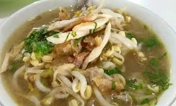
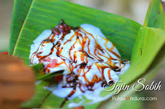
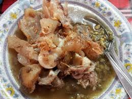
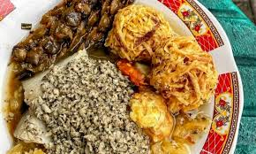

Sampang: Ragam Pesona di Jantung Pulau Madura
Sampang merupakan salah satu kabupaten di Pulau Madura, Jawa Timur. Wilayahnya memadukan pesisir, perbukitan kapur, dan kawasan pertanian dengan kekayaan budaya Madura yang kental.
Ikhtisar Cepat
Geografi & Iklim
Topografi didominasi perbukitan kapur dengan pesisir di sisi selatan dan utara. Iklim tropis kering dengan musim kemarau panjang menjadikan budaya tandur dan pengelolaan air sangat penting.
Letak
Berada di bagian tengah Pulau Madura, berbatasan dengan Bangkalan (barat), Pamekasan (timur), dan Laut Jawa (selatan-utara).
Curah Hujan
Relatif rendah dibanding Jawa daratan; kemarau kering memengaruhi pola tanam dan jenis tanaman seperti jagung & tembakau.
Keunikan Alam
Gua karst, pantai berpasir kecokelatan, serta lahan garam tradisional di beberapa titik pesisir.
Budaya & Tradisi
Masyarakat Sampang menjunjung tinggi nilai kekeluargaan, religiusitas, dan adat Madura yang khas.
Bahasa
Bahasa Madura dialek Sumenep–Pamekasan–Sampang, dengan kosakata khas pesisir.
Tradisi
- Rokat Tase' (selamatan laut)
- Rokat Bumi
- Molodhan (peringatan Maulid)
Kerajinan
Batik Madura bernuansa terang, anyaman, dan seni ukir sederhana pada kayu lokal.
Makanan Khas
Cita rasa gurih-pedas dengan bumbu rempah kuat menjadi ciri khas kuliner Sampang dan Madura pada umumnya.
Sate Madura

Terkenal dengan bumbu kacang kental dan sambal kecap pedas. Variasi ayam dan kambing populer di Sampang.
Soto Sampang
Soto daging dengan kuah bening-gurih, disajikan dengan koya, perasan jeruk, dan sambal.
Nasi Serpang

Nasi campur khas pesisir dengan lauk beragam: dendeng, sambal tongkol, serundeng, telur bumbu, dll.
Tajin Sobih
Bubur manis dari ketan hitam dan santan, populer sebagai takjil.
Kaldu Kokot
Sup kaki sapi dengan kacang hijau, kuah rempah yang pekat dan menghangatkan.
Lontong Kupang
Olahan kerang kecil (kupang) dengan kuah segar, petis, dan perasan jeruk nipis.
Kesenian Daerah
Karapan Sapi
Ikon budaya Madura. Di Sampang, karapan menjadi ajang silaturahmi dan kebanggaan desa.
Macapat & Mamaca
Tradisi tembang dan pembacaan naskah beraksara pegon untuk hikmah dan nasihat.
Hadrah & Saman Lokal
Bernuansa religius, sering hadir pada perayaan Maulid dan hajatan.
Pantai dan Wisata Alam
Garis pantai Sampang menawarkan panorama matahari terbenam yang hangat, serta spot kuliner laut sederhana namun autentik.
Fakta Unik
Dialek & Sapaan
Penggunaan sapaan khas seperti ben, tak, bhâ'-bhâ' menjadi identitas lokal.
Kuliner Pedas
Sambal terasi dan cabe rawit mendominasi; pedas dianggap meningkatkan selera makan.
Religius
Banyak pesantren dan majelis ilmu; kalender acara keagamaan aktif sepanjang tahun.
Ekonomi Lokal
Pertanian jagung, garam rakyat, perikanan, dan perdagangan kecil-kecilan.
Arsitektur
Rumah sederhana dengan teras lebar untuk berkumpul, pagar kayu, dan warna kontras.
Transportasi
Akses via Jembatan Suramadu (dari Bangkalan) kemudian melintasi jalur tengah Pulau Madura.
Tips Kunjungan
Waktu Terbaik
Musim kemarau awal–pertengahan saat langit cerah. Sore hari cocok untuk menikmati pantai dan kuliner.
- Bawa topi, kacamata, dan air minum cukup.
- Gunakan pakaian sopan saat ke tempat ibadah dan acara adat.
Etika Lokal
Hargai norma setempat, terutama saat memotret orang. Sapa dengan ramah; senyum membuka percakapan.
- Tawar-menawar di pasar dilakukan dengan santun.
- Jaga kebersihan pantai dan area publik.
Konflik di Kabupaten Sampang
Fokus: pemulihan sosial & dialog
Beberapa peristiwa sosial pernah terjadi di Sampang, termasuk konflik berbasis perbedaan keyakinan dan sosial-ekonomi. Ringkasan berikut bersifat informatif untuk memahami konteks secara netral dan mendorong upaya damai.
Latar Belakang
Faktor penyebab umumnya meliputi dinamika identitas, kesenjangan informasi, ekonomi, dan pengaruh lokalitas pedesaan. Persepsi berbeda yang tidak tersalurkan dalam dialog dapat memicu ketegangan.
Dampak
- Gangguan rasa aman sebagian warga dan aktivitas ekonomi.
- Perpindahan sementara warga terdampak dan perlunya dukungan sosial.
- Kerentanan fasilitas umum serta kebutuhan pemulihan sosial.
Penanganan & Upaya Damai
- Fasilitasi dialog lintas tokoh masyarakat, agama, dan pemuda.
- Pemulihan berbasis komunitas: pendidikan toleransi, layanan psikososial.
- Penguatan ekonomi inklusif dan program kolaborasi warga.
Catatan
Bagian ini disusun secara ringkas dan netral untuk tujuan edukasi umum. Untuk detail kebijakan atau data resmi, rujuk publikasi pemerintah daerah, lembaga riset, dan berita tepercaya.
Inisiatif Perdamaian di Lapangan
- Forum rutin di desa/kelurahan sebagai ruang dengar antarwarga.
- Program sahabat sekolah dan pesantren untuk literasi toleransi.
- Gotong royong lintas RT/RW pada pemulihan fasilitas umum.
Peran Pemangku Kepentingan
- Tokoh agama dan adat memediasi serta memberi teladan dialog.
- Pemda/OPD menyediakan layanan bantuan hukum dan sosial.
- Komunitas pemuda menggelar kegiatan kolaboratif kreatif.
Keberlanjutan
- Pemetaan konflik lokal dan indikator dini untuk pencegahan.
- Pelatihan fasilitator komunitas dan kader perdamaian.
- Monitoring partisipatif serta publikasi praktik baik.
Kuis Singkat: Harmoni di Tempat Kerja & Komunitas Latihan
Jawaban diisi berdasarkan praktik umum yang mendukung perdamaian sosial; relevan untuk konteks Sampang yang menjunjung nilai kekeluargaan, toleransi, dan dialog.
| No | Pernyataan | Benar | Salah |
|---|---|---|---|
| 1 | Harmoni dalam keberagaman sangat penting untuk menciptakan lingkungan kerja yang inklusif dan produktif. | ✔Benar | |
| 2 | Keberagaman pekerjaan tidak berkontribusi pada penciptaan harmoni di lingkungan kerja. | ✘Salah | |
| 3 | Menerapkan nilai harmoni dalam keberagaman dapat membantu mengurangi konflik dan meningkatkan produktivitas di lingkungan masyarakat dan lingkungan kerja. | ✔Benar | |
| 4 | Menciptakan harmoni dalam keberagaman merupakan tanggung jawab pimpinan di tempat kerja, bukan tanggung jawab karyawan. | ✘Salah | |
| 5 | Toleransi dan harmoni dalam keberagaman adalah konsep yang sama dan dapat digunakan secara bergantian. | ✘Salah |
Catatan: Jawaban merujuk pada prinsip umum pembangunan perdamaian (peacebuilding) dan praktik kolaborasi komunitas yang juga relevan untuk konteks Sampang.